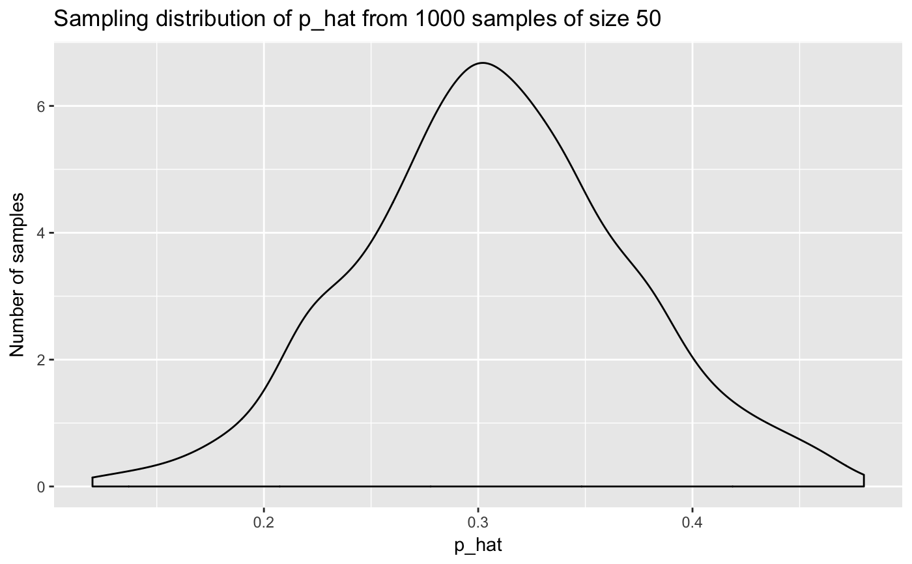

Perform repeated sampling of samples of size n. Useful for creating sampling distributions
rep_sample_n(tbl, size, replace = FALSE, reps = 1, prob = NULL)
| tbl | data frame of population from which to sample |
|---|---|
| size | sample size of each sample |
| replace | should sampling be with replacement? |
| reps | number of samples of size n = |
| prob | a vector of probability weights for obtaining the elements of the vector being sampled. |
A tibble of size rep times size rows corresponding to
rep samples of size n = size from tbl.
suppressPackageStartupMessages(library(dplyr)) suppressPackageStartupMessages(library(ggplot2)) # A virtual population of N = 10,010, of which 3091 are hurricanes population <- dplyr::storms %>% select(status) # Take samples of size n = 50 storms without replacement; do this 1000 times samples <- population %>% rep_sample_n(size = 50, reps = 1000) samples#> # A tibble: 50,000 x 2 #> # Groups: replicate [1,000] #> replicate status #> <int> <chr> #> 1 1 hurricane #> 2 1 hurricane #> 3 1 tropical storm #> 4 1 tropical depression #> 5 1 tropical storm #> 6 1 hurricane #> 7 1 hurricane #> 8 1 hurricane #> 9 1 tropical depression #> 10 1 tropical storm #> # ... with 49,990 more rows# Compute p_hats for all 1000 samples = proportion hurricanes p_hats <- samples %>% group_by(replicate) %>% summarize(prop_hurricane = mean(status == "hurricane")) p_hats#> # A tibble: 1,000 x 2 #> replicate prop_hurricane #> <int> <dbl> #> 1 1 0.38 #> 2 2 0.28 #> 3 3 0.32 #> 4 4 0.3 #> 5 5 0.42 #> 6 6 0.32 #> 7 7 0.38 #> 8 8 0.34 #> 9 9 0.26 #> 10 10 0.3 #> # ... with 990 more rows# Plot sampling distribution ggplot(p_hats, aes(x = prop_hurricane)) + geom_density() + labs(x = "p_hat", y = "Number of samples", title = "Sampling distribution of p_hat from 1000 samples of size 50")